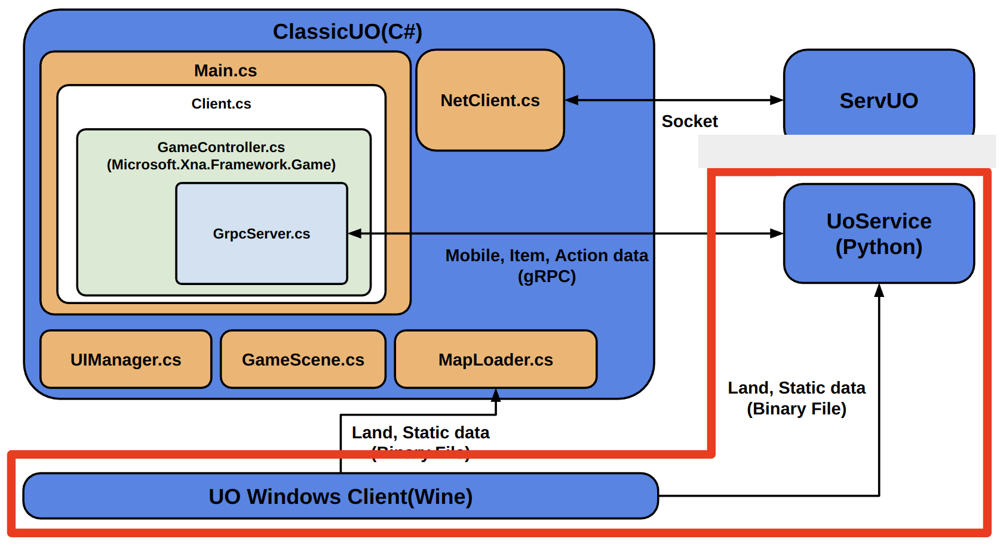
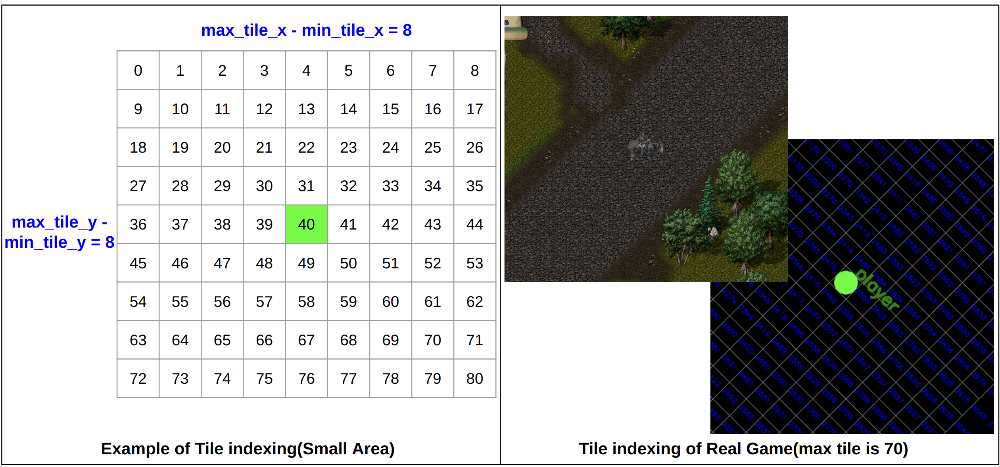
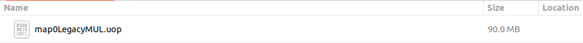
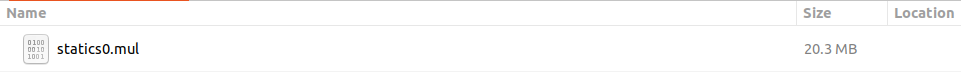
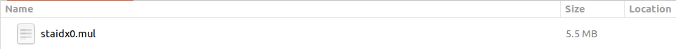
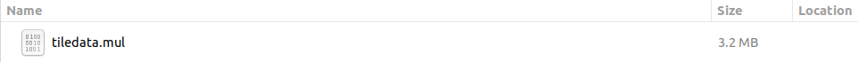

Binary File Tutorial
Excluding Mobile and Item objects, there are Land and Static objects in the game that can passively affect the Agent. However, these do not move by themselves and only change their relative position when the player moves. In addition, information on Land and Static objects can be extracted from the already installed binary file of Ultima Online.
The location of the files might be different slightly depending on the setting of the computer, but the full path usually looks like a /home/kimbring2/.wine/drive_c/Program Files (x86)/Electronic Arts/Ultima Online Classic when the Wine program is used to install the Windows client.
Land and Static data
Unique Indexing for the Land and Static
The Land and Static data have no unique tag to distinquch them from others unlike Mobile and Item data. However what if we need to point out one specifilc land and static to drop an item or collect item from it? Fortunately, even if the agent moves, the index of land and static within the screen can be designated as shown in the figure below.
By using this type of indexing, in UoService, all actions can be performed without using the pixel point as action argument. It is useful to reduce the training load by allowing us to use a slightly simpler Neural Network.
Extracting Land and Static data
Read the Map Binary Files
There are a total of 3 binary files related to map data. First, there is map0LegacyMUL.uop where information itself is stored, and next there are statics0.mul and staidx0.mul where address information for extracting map data of a specific position from the first file is stored.Figure1: Map Information Files
  Code 1: Read the Map Binary Files.
from io import StringIO, BytesIO
import struct
import utils
from numpy import int8
import os
files_map_name = "map0LegacyMUL.uop"
files_statics_name = "statics0.mul"
files_index_statics_name = "staidx0.mul"
UOP_MAGIC_NUMBER = hex(0x50594d)
_has_extra = False
total_entries_count = 0;
hashes_dict = {}
file_size = 0
MapsDefaultSize = {7168 >> 3, 4096 >> 3}
files_map = open(files_map_name, 'rb')
p_files_map = files_map.read()
files_map_reader = utils.FileReader(BytesIO(p_files_map))
files_map_size = files_map_reader.size
files_statics = open(files_statics_name, 'rb')
p_files_statics = files_statics.read()
files_statics_reader = utils.FileReader(BytesIO(p_files_statics))
files_statics_size = files_statics_reader.size
files_index_statics = open(files_index_statics_name, 'rb')
p_files_index_statics = files_index_statics.read()
files_index_statics_reader = utils.FileReader(BytesIO(p_files_index_statics))
files_index_statics_size = files_index_statics_reader.size
files_map_reader.seek(0)
files_statics_reader.seek(0)
files_index_statics_reader.seek(0)
uop_magic_number = hex(files_map_reader.read_uint32())
if uop_magic_number != UOP_MAGIC_NUMBER:
raise NameError('Bad uop file')
version = files_map_reader.read_uint32()
format_timestamp = files_map_reader.read_uint32()
next_block = files_map_reader.read_long()
block_size = files_map_reader.read_uint32()
count = files_map_reader.read_uint32()
files_map_reader.seek(next_block)
total = 0;
real_total = 0;
while next_block != 0:
files_count = files_map_reader.read_uint32()
next_block = files_map_reader.read_long()
total += files_count;
for i in range(0, files_count):
offset = files_map_reader.read_long()
header_length = files_map_reader.read_uint32()
compressed_length = files_map_reader.read_uint32()
decompressed_length = files_map_reader.read_uint32()
hash_value = files_map_reader.read_long()
data_hash = files_map_reader.read_uint32()
flag = files_map_reader.read_short();
length = compressed_length if flag == 1 else decompressed_length;
if offset == 0:
continue
real_total += 1
offset += header_length
hashes_dict[hash_value] = utils.UOFileIndex(file_size, offset, compressed_length,
decompressed_length)
files_map_reader.seek(next_block)
total_entries_count = real_total;
pattern = "build/map0legacymul/{:08d}.dat"
entries = []
for i in range(0, total_entries_count):
file = pattern.format(i)
hash_value = utils.create_hash(file)
hash_data = hashes_dict[hash_value]
entries.append(hash_data)
mapblocksize = 196
staticidxblocksize = 12
staticblocksize = 7
uopoffset = 0
file_number = -1;
maxblockcount = 896 * 512
block_data = []
for block in range(0, maxblockcount):
realmapaddress = 0
realstaticaddress = 0
realstaticcount = 0
blocknum = block;
blocknum &= 4095;
shifted = block >> 12;
if file_number != shifted:
file_number = shifted
if shifted < len(entries):
uopoffset = entries[shifted].offset
address = uopoffset + (blocknum * mapblocksize);
if address < files_map_size:
realmapaddress = address
stidxaddress = (block * staticidxblocksize);
files_index_statics_reader.seek(stidxaddress)
position = files_index_statics_reader.read_uint32()
size = files_index_statics_reader.read_uint32()
unknown = files_index_statics_reader.read_uint32()
if stidxaddress < files_index_statics_size and size > 0 and position != 0xFFFFFFFF:
address1 = position
if address1 < files_statics_size:
realstaticaddress = address1;
realstaticcount = int(size / staticblocksize)
if realstaticcount > 1024:
realstaticcount = 1024;
if block % 1000 == 0 and realstaticcount != 0:
#print("block: {0}, realmapaddress: {1}, realstaticaddress: {2}, realstaticcount: {3}".format(block,
# realmapaddress, realstaticaddress, realstaticcount))
pass
index_map = utils.IndexMap(realmapaddress, realstaticaddress, realstaticcount,
realmapaddress, realstaticaddress, realstaticcount)
block_data.append(index_map)
Read the Tile Binary File
In the map data read first, only numerical values such as the tile id of specific location can be known. However, this alone cannot distinguish whether grass, sand, dirt, wood, rock, or water are in that map location. The text information is stored in the tiledata.mul file. The tile ID of previous step can be used as the index here.Figure2: tiledata.mul File
Code 2: Read the Tile Binary File.
files_tiledata_name = "tiledata.mul"
file_tiledata = open(files_tiledata_name, 'rb')
p_file_tiledata = file_tiledata.read()
files_tiledata_reader = utils.FileReader(BytesIO(p_file_tiledata))
files_tiledata_reder.seek(0)
land_data_dict = {}
for i in range(0, 512):
files_tiledata_reader.read_uint32()
for j in range(0, 32):
idx = i * 32 + j
flags = files_tiledata_reader.read_long();
text_id = files_tiledata_reader.read_short();
buffer_string = ""
for k in range(0, 20):
byte_data = files_tiledata_reader.read_byte()
if byte_data != 0:
buffer_string += chr(byte_data)
land_data_dict[idx] = {"flags": flags, "text_id": text_id, "name": buffer_string}
static_data_dict = {}
for i in range(0, 2048):
files_tiledata_reader.read_uint32()
for j in range(0, 32):
idx = i * 32 + j
flags = files_tiledata_reader.read_long()
weight = files_tiledata_reader.read_byte()
layer = files_tiledata_reader.read_byte()
count = files_tiledata_reader.read_uint32();
anim_id = files_tiledata_reader.read_short();
hue = files_tiledata_reader.read_short();
light_index = files_tiledata_reader.read_short();
height = files_tiledata_reader.read_byte();
buffer_string = ""
for k in range(0, 20):
byte_data = files_tiledata_reader.read_byte()
if byte_data != 0:
buffer_string += chr(byte_data)
static_data_dict[idx] = {"flags": flags, "weight": weight, "layer": layer, "count": count,
"anim_id": anim_id, "hue": hue, "light_index": light_index,
"height": height, "name": buffer_string }
Using the data of Read Map and Tile Binary Files
Code 3: Using the data of Read Map and Tile Binary Files
position_list = [[438, 313], [440, 316], [440, 314], [441, 314], [440, 313], [438, 314], [438, 315], [439, 314],
[439, 312], [439, 313], [439, 311], [436, 315], [437, 314], [436, 314], [437, 315], [434, 309]]
for position in position_list:
X = position[0]
Y = position[1]
im = utils.get_index(block_data, X, Y)
files_map_reader.seek(im.map_address)
header = files_map_reader.read_uint32()
for y in range(0, 8):
pos = y << 3
for x in range(0, 8):
tile_id = files_map_reader.read_short();
z = int8(files_map_reader.read_byte());
tile_id = (tile_id & 0x3FFF);
land_data = land_data_dict[tile_id]
print("x: {0}, y: {1}, tile_id: {2}, z: {3}, name: {4}".format(x, y, tile_id, z, land_data["name"]))
if im.static_address != 0:
files_statics_reader.seek(im.static_address)
for i in range(0, im.static_count):
color = files_statics_reader.read_short()
x = files_statics_reader.read_byte()
y = files_statics_reader.read_byte()
z = files_statics_reader.read_byte()
hue = files_statics_reader.read_short()
static_data = static_data_dict[color]
print("")